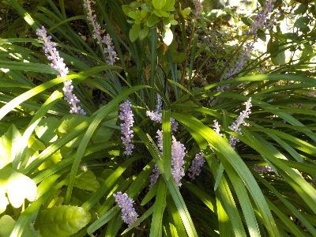
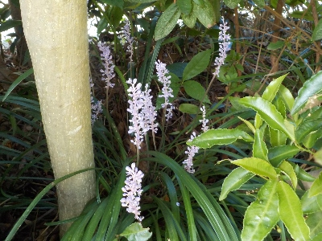

遊びで植物を育てよう
目立たないけど、薄紫色でキレイなヤブランの花。
更新日 : 2025/08/30
2025/08/30
ヤブランの花は涼し気です。

日陰に淡い色の花が咲いてるのでとっても涼しそう。
鉢植えでこんな状態を作りたいけど、日陰に置くから目立たないかもしれないな。
2024/09/23
ヤブランが増えています。

今年の夏は雨が少なくていろいろ枯れたんですが、ヤブランは茂みの中で成長してました。
ヤブランは強いですね。
花もキレイなので、増やしてあちこちに植えたいです。
園芸 > 花 > ヤブラン
ヤブランの記事をまとめたものはこちら
【おいしいものを食べよう。】【しっかり寝よう。】
【ソロ活をしよう!】【季節感のあることをしよう。】【動画視聴はほどほどに。】【当サイトの全てのコンテンツは無断転載禁止です。】